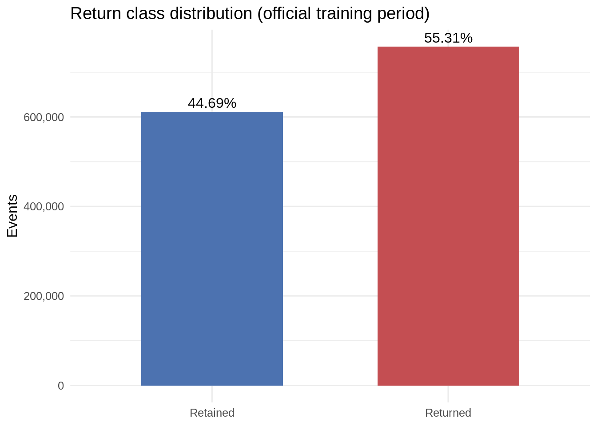
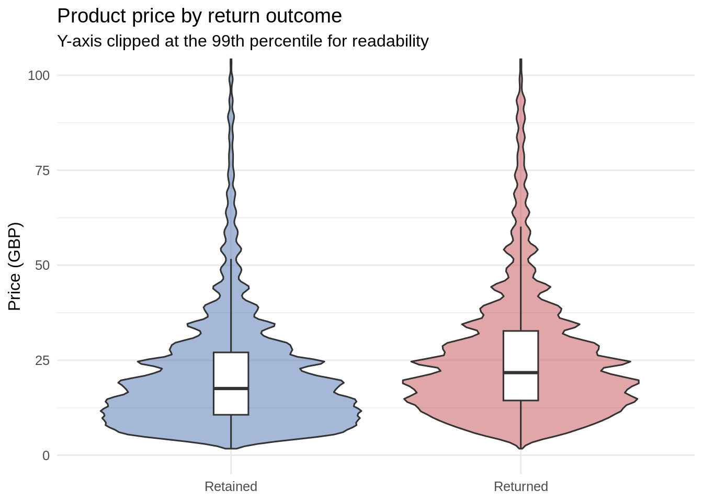
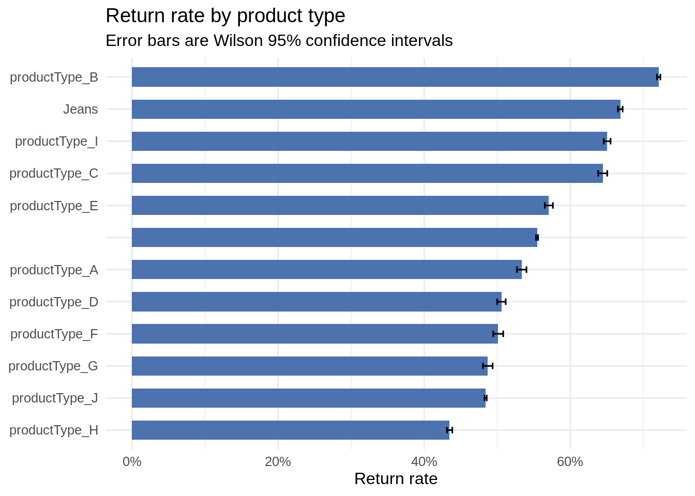
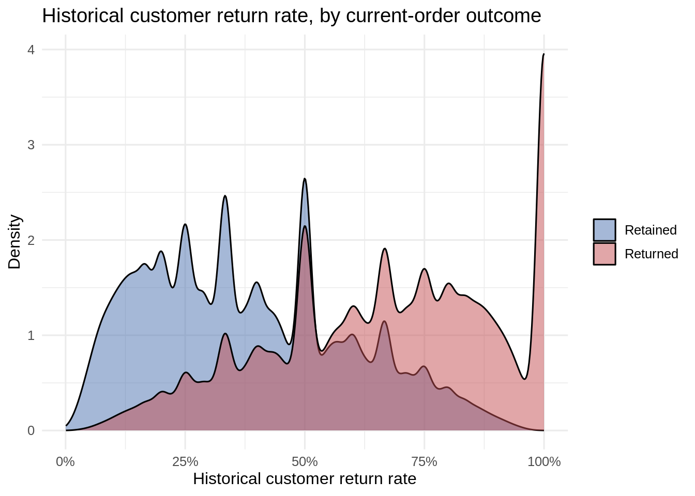
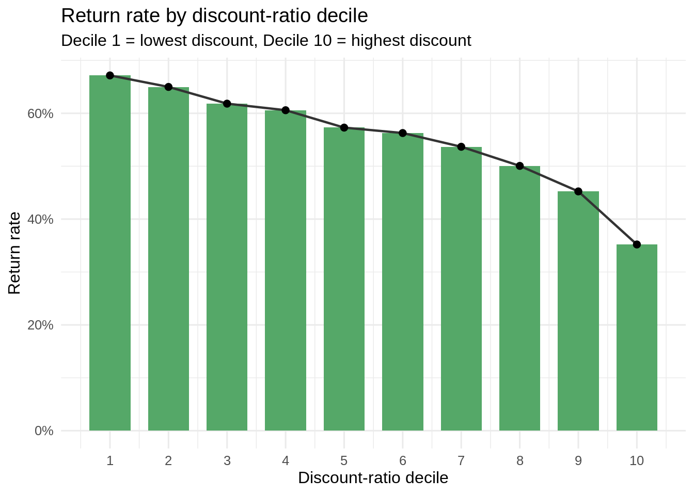
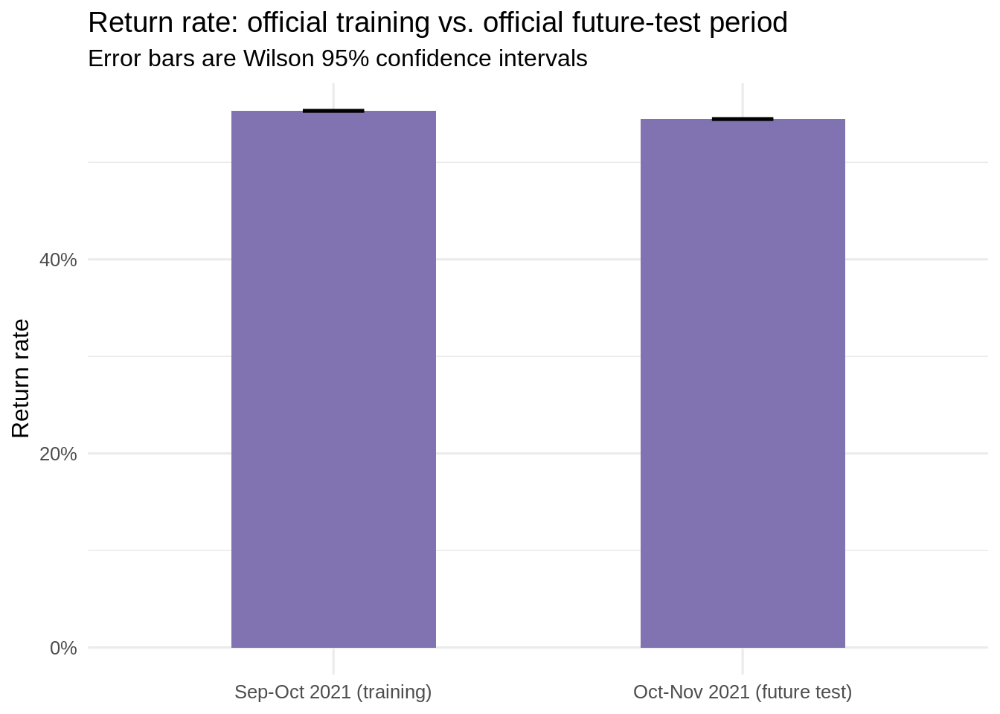

Code
source(file.path("R", "00_setup.R"))00_setup.R loaded: paths, IO helpers, and metrics are ready.Category-Aware and Future-Period Drift-Audited Conformal Risk Control for Value-Sensitive E-Commerce Returns
This notebook is Stage 2 of the CostConformal-Return pipeline. It reads only the processed files written by Stage 1 (data/processed/*.csv.gz) — it never touches data/raw_pickle/ or data/raw_csv_gz/ — and produces the six exploratory figures and their backing tables described in Section 8 of the project report. Figures 06_value_exposure_and_intervention_by_threshold.png and 07_calibration_curve.png are deliberately not produced here: both depend on the fitted baseline model’s calibrated probabilities and belong to Stage 3.
Every number in this document is Wilson-CI-audited wherever a rate is plotted, using the same wilson_ci() helper from R/00_setup.R that Stage 1 sources.
02_eda_visualizations.qmd in the project root — the same folder as CostConformal-Return.Rproj.data/processed/official_training_strict.csv.gz and data/processed/official_future_test_strict.csv.gz both exist.Ctrl/Cmd+Shift+K, or run chunk-by-chunk.source(file.path("R", "00_setup.R"))00_setup.R loaded: paths, IO helpers, and metrics are ready.We use the full official training period (not just model_train) for EDA, matching how the report’s reference numbers were computed — EDA describes the data, it doesn’t leak into model fitting, so there’s no reason to throw away 35% of the training rows here.
processed_files <- c(
train = file.path(PROCESSED_DIR, "official_training_strict.csv.gz"),
future_test = file.path(PROCESSED_DIR, "official_future_test_strict.csv.gz")
)
assert_files_exist(processed_files)
train_dt <- fread(processed_files[["train"]])
future_dt <- fread(processed_files[["future_test"]])
cat("Training rows:", nrow(train_dt), " | Future-test rows:", nrow(future_dt), "\n")Training rows: 1369133 | Future-test rows: 1460366 class_dist <- train_dt[, .(
count = .N
), by = isReturned][order(isReturned)]
class_dist[, label := fifelse(isReturned == 1L, "Returned", "Retained")]
class_dist[, pct := count / sum(count)]
fwrite(class_dist, file.path(TABLE_DIR, "07_return_class_distribution.csv"))
class_dist| isReturned | count | label | pct |
|---|---|---|---|
| 0 | 611906 | Retained | 0.4469296 |
| 1 | 757227 | Returned | 0.5530704 |
p_class <- ggplot(class_dist, aes(x = label, y = count, fill = label)) +
geom_col(width = 0.6) +
geom_text(aes(label = percent(pct, accuracy = 0.01)), vjust = -0.4) +
scale_y_continuous(labels = comma) +
scale_fill_manual(values = c("Retained" = "#4C72B0", "Returned" = "#C44E52")) +
labs(
title = "Return class distribution (official training period)",
x = NULL, y = "Events", fill = NULL
) +
theme_minimal(base_size = 12) +
theme(legend.position = "none")
p_class
save_plot(p_class, "01_return_class_distribution.png")Close to balanced — accuracy alone is a legitimate but insufficient metric; PR-AUC, recall and the value-weighted metrics remain necessary downstream.
Only rows with a valid joined price (!is.na(avgGbpPrice)) are included, consistent with how value_exposure is defined in Stage 1.
price_by_outcome <- train_dt[!is.na(avgGbpPrice), .(
events_with_price = .N,
mean_price = mean(avgGbpPrice),
median_price = median(avgGbpPrice),
p95_price = quantile(avgGbpPrice, 0.95, names = FALSE),
p99_price = quantile(avgGbpPrice, 0.99, names = FALSE)
), by = isReturned][order(-isReturned)]
price_by_outcome[, label := fifelse(isReturned == 1L, "Returned", "Retained")]
fwrite(price_by_outcome, file.path(TABLE_DIR, "08_price_by_return_outcome.csv"))
price_by_outcome| isReturned | events_with_price | mean_price | median_price | p95_price | p99_price | label |
|---|---|---|---|---|---|---|
| 1 | 494049 | 26.97449 | 21.74 | 64.7200 | 108.41 | Returned |
| 0 | 400494 | 21.75982 | 17.56 | 53.8935 | 92.99 | Retained |
plot_dt <- train_dt[!is.na(avgGbpPrice)]
plot_dt[, label := fifelse(isReturned == 1L, "Returned", "Retained")]
p_price <- ggplot(plot_dt, aes(x = label, y = avgGbpPrice, fill = label)) +
geom_violin(alpha = 0.5, trim = TRUE) +
geom_boxplot(width = 0.12, outlier.shape = NA, fill = "white") +
coord_cartesian(ylim = c(0, quantile(plot_dt$avgGbpPrice, 0.99, names = FALSE))) +
scale_fill_manual(values = c("Retained" = "#4C72B0", "Returned" = "#C44E52")) +
labs(
title = "Product price by return outcome",
subtitle = "Y-axis clipped at the 99th percentile for readability",
x = NULL, y = "Price (GBP)", fill = NULL
) +
theme_minimal(base_size = 12) +
theme(legend.position = "none")
p_price
save_plot(p_price, "02_product_price_by_return_outcome.png")Returned items skew consistently higher across the whole distribution (mean, median, p95, p99 all higher), supporting the value-sensitive framing — but the heavy overlap between distributions means price alone cannot separate the classes.
by_type <- train_dt[!is.na(productType), .(
events = .N,
returns = sum(isReturned == 1L)
), by = productType]
by_type[, c("return_rate", "ci_lower", "ci_upper") := {
ci <- Map(wilson_ci, returns, events)
list(
sapply(ci, `[[`, "p_hat"),
sapply(ci, `[[`, "lower"),
sapply(ci, `[[`, "upper")
)
}]
setorder(by_type, -return_rate)
fwrite(by_type, file.path(TABLE_DIR, "09_return_rate_by_product_type.csv"))
by_type| productType | events | returns | return_rate | ci_lower | ci_upper |
|---|---|---|---|---|---|
| productType_B | 144669 | 104307 | 0.7210045 | 0.7186875 | 0.7233098 |
| Jeans | 81938 | 54773 | 0.6684688 | 0.6652377 | 0.6716842 |
| productType_I | 40103 | 26088 | 0.6505249 | 0.6458441 | 0.6551769 |
| productType_C | 22663 | 14604 | 0.6443984 | 0.6381421 | 0.6506057 |
| productType_E | 30551 | 17434 | 0.5706524 | 0.5650934 | 0.5761935 |
| 474590 | 263178 | 0.5545376 | 0.5531231 | 0.5559512 | |
| productType_A | 22690 | 12105 | 0.5334949 | 0.5269986 | 0.5399799 |
| productType_D | 28084 | 14203 | 0.5057328 | 0.4998851 | 0.5115790 |
| productType_F | 20545 | 10300 | 0.5013385 | 0.4945019 | 0.5081746 |
| productType_G | 21816 | 10625 | 0.4870279 | 0.4803981 | 0.4936622 |
| productType_J | 411115 | 199015 | 0.4840860 | 0.4825585 | 0.4856137 |
| productType_H | 70369 | 30595 | 0.4347795 | 0.4311205 | 0.4384457 |
by_type[, productType := factor(productType, levels = productType[order(return_rate)])]
p_type <- ggplot(by_type, aes(x = productType, y = return_rate)) +
geom_col(fill = "#4C72B0", width = 0.6) +
geom_errorbar(aes(ymin = ci_lower, ymax = ci_upper), width = 0.2) +
coord_flip() +
scale_y_continuous(labels = percent) +
labs(
title = "Return rate by product type",
subtitle = "Error bars are Wilson 95% confidence intervals",
x = NULL, y = "Return rate"
) +
theme_minimal(base_size = 12)
p_type
save_plot(p_type, "03_return_rate_by_product_type.png")Confidence intervals are tight because per-category sample sizes are large — the spread between the highest- and lowest-return-rate categories is a real, well-estimated effect. This directly motivates the category-aware CRC extension in Stage 3: a single global threshold calibrated on the overall return rate would be miscalibrated at both ends of this range.
history_by_outcome <- train_dt[!is.na(customerReturnRate), .(
events = .N,
mean_hist_rate = mean(customerReturnRate),
median_hist_rate = median(customerReturnRate)
), by = isReturned][order(isReturned)]
history_by_outcome[, label := fifelse(isReturned == 1L, "Returned", "Retained")]
fwrite(history_by_outcome, file.path(TABLE_DIR, "10_customer_history_by_outcome.csv"))
history_by_outcome| isReturned | events | mean_hist_rate | median_hist_rate | label |
|---|---|---|---|---|
| 0 | 586519 | 0.3799049 | 0.3333333 | Retained |
| 1 | 710966 | 0.6685872 | 0.6857143 | Returned |
plot_dt <- train_dt[!is.na(customerReturnRate)]
plot_dt[, label := fifelse(isReturned == 1L, "Returned", "Retained")]
p_history <- ggplot(plot_dt, aes(x = customerReturnRate, fill = label)) +
geom_density(alpha = 0.5) +
scale_x_continuous(labels = percent) +
scale_fill_manual(values = c("Retained" = "#4C72B0", "Returned" = "#C44E52")) +
labs(
title = "Historical customer return rate, by current-order outcome",
x = "Historical customer return rate", y = "Density", fill = NULL
) +
theme_minimal(base_size = 12)
p_history
save_plot(p_history, "04_customer_history_density.png")Customers whose current order is later returned have a markedly higher historical return rate, but the overlap is large enough that history alone is not a perfect predictor — it’s a strong feature, not a decision rule by itself.
disc_dt <- train_dt[!is.na(discount_ratio)]
disc_dt[, discount_decile := cut(
discount_ratio,
breaks = quantile(discount_ratio, probs = seq(0, 1, 0.1), names = FALSE),
include.lowest = TRUE,
labels = FALSE
)]
discount_bins <- disc_dt[, .(
events = .N,
mean_discount_ratio = mean(discount_ratio),
return_rate = mean(isReturned)
), by = discount_decile][order(discount_decile)]
fwrite(discount_bins, file.path(TABLE_DIR, "11_discount_ratio_bins.csv"))
discount_bins| discount_decile | events | mean_discount_ratio | return_rate |
|---|---|---|---|
| 1 | 89455 | 0.2102819 | 0.6716114 |
| 2 | 89454 | 0.3059743 | 0.6498759 |
| 3 | 89462 | 0.3574751 | 0.6182401 |
| 4 | 89446 | 0.3997865 | 0.6058292 |
| 5 | 89455 | 0.4411156 | 0.5729473 |
| 6 | 89481 | 0.4831378 | 0.5627005 |
| 7 | 89448 | 0.5299679 | 0.5367364 |
| 8 | 89435 | 0.5815317 | 0.5005982 |
| 9 | 89452 | 0.6466508 | 0.4523432 |
| 10 | 89455 | 0.7460940 | 0.3520206 |
p_discount <- ggplot(discount_bins, aes(x = discount_decile, y = return_rate)) +
geom_col(fill = "#55A868", width = 0.7) +
geom_line(color = "#333333", linewidth = 0.8) +
geom_point(size = 2) +
scale_x_continuous(breaks = 1:10) +
scale_y_continuous(labels = percent) +
labs(
title = "Return rate by discount-ratio decile",
subtitle = "Decile 1 = lowest discount, Decile 10 = highest discount",
x = "Discount-ratio decile", y = "Return rate"
) +
theme_minimal(base_size = 12)
p_discount
save_plot(p_discount, "05_discount_ratio_vs_return_rate.png")Return rate falls almost monotonically as discount ratio rises. Framed as association, not causation — product type, price and customer mix are confounders here, not controlled for in this simple bin-based view.
period_dt <- rbindlist(list(
train_dt[, .(period = "Sep-Oct 2021 (training)", events = .N, returns = sum(isReturned == 1L))],
future_dt[, .(period = "Oct-Nov 2021 (future test)", events = .N, returns = sum(isReturned == 1L))]
))
period_dt[, c("return_rate", "ci_lower", "ci_upper") := {
ci <- Map(wilson_ci, returns, events)
list(
sapply(ci, `[[`, "p_hat"),
sapply(ci, `[[`, "lower"),
sapply(ci, `[[`, "upper")
)
}]
fwrite(period_dt, file.path(TABLE_DIR, "12_return_rate_by_period.csv"))
period_dt| period | events | returns | return_rate | ci_lower | ci_upper |
|---|---|---|---|---|---|
| Sep-Oct 2021 (training) | 1369133 | 757227 | 0.5530704 | 0.5522375 | 0.5539031 |
| Oct-Nov 2021 (future test) | 1460366 | 795366 | 0.5446347 | 0.5438269 | 0.5454423 |
period_dt[, period := factor(period, levels = period)]
p_period <- ggplot(period_dt, aes(x = period, y = return_rate)) +
geom_col(fill = "#8172B2", width = 0.5) +
geom_errorbar(aes(ymin = ci_lower, ymax = ci_upper), width = 0.15) +
scale_y_continuous(labels = percent, limits = c(0, NA)) +
labs(
title = "Return rate: official training vs. official future-test period",
subtitle = "Error bars are Wilson 95% confidence intervals",
x = NULL, y = "Return rate"
) +
theme_minimal(base_size = 12)
p_period
save_plot(p_period, "08_return_rate_by_official_period.png")A small but statistically clear drop between periods (check whether the CIs overlap in the table above). Small in magnitude, but this is exactly the kind of shift the Stage 3 future-period drift audit is designed to catch — the point of that audit is not to detect a large shock, but to confirm that calibration and CRC risk-target satisfaction don’t quietly degrade even under a modest, realistic shift.
Once every box is checked, you’re ready for Stage 3 (03_calibration_crc_visualizations.qmd) — the baseline model, calibration comparison, and Conformal Risk Control.
sessionInfo()R version 4.6.1 (2026-06-24)
Platform: aarch64-unknown-linux-gnu
Running under: Debian GNU/Linux 12 (bookworm)
Matrix products: default
BLAS: /usr/lib/aarch64-linux-gnu/openblas-pthread/libblas.so.3
LAPACK: /usr/lib/aarch64-linux-gnu/openblas-pthread/libopenblasp-r0.3.21.so; LAPACK version 3.11.0
locale:
[1] LC_CTYPE=en_US.UTF-8 LC_NUMERIC=C
[3] LC_TIME=en_US.UTF-8 LC_COLLATE=en_US.UTF-8
[5] LC_MONETARY=en_US.UTF-8 LC_MESSAGES=en_US.UTF-8
[7] LC_PAPER=en_US.UTF-8 LC_NAME=C
[9] LC_ADDRESS=C LC_TELEPHONE=C
[11] LC_MEASUREMENT=en_US.UTF-8 LC_IDENTIFICATION=C
time zone: Asia/Calcutta
tzcode source: system (glibc)
attached base packages:
[1] stats graphics grDevices utils datasets methods base
other attached packages:
[1] R.utils_2.13.0 R.oo_1.27.1 R.methodsS3_1.8.2
[4] scales_1.4.0 ggplot2_4.0.3 data.table_1.18.6.1
loaded via a namespace (and not attached):
[1] vctrs_0.7.3 cli_3.6.6 knitr_1.52 rlang_1.3.0
[5] xfun_0.61 otel_0.2.0 generics_0.1.4 S7_0.2.2
[9] jsonlite_2.0.0 labeling_0.4.3 bit_4.6.0 glue_1.8.1
[13] htmltools_0.5.9 rmarkdown_2.32 grid_4.6.1 tibble_3.3.1
[17] evaluate_1.0.5 fastmap_1.2.0 yaml_2.3.12 lifecycle_1.0.5
[21] compiler_4.6.1 dplyr_1.2.1 RColorBrewer_1.1-3 pkgconfig_2.0.3
[25] rstudioapi_0.19.0 farver_2.1.2 digest_0.6.39 R6_2.6.1
[29] tidyselect_1.2.1 pillar_1.11.1 magrittr_2.0.5 bit64_4.8.6
[33] withr_3.0.3 tools_4.6.1 gtable_0.3.6